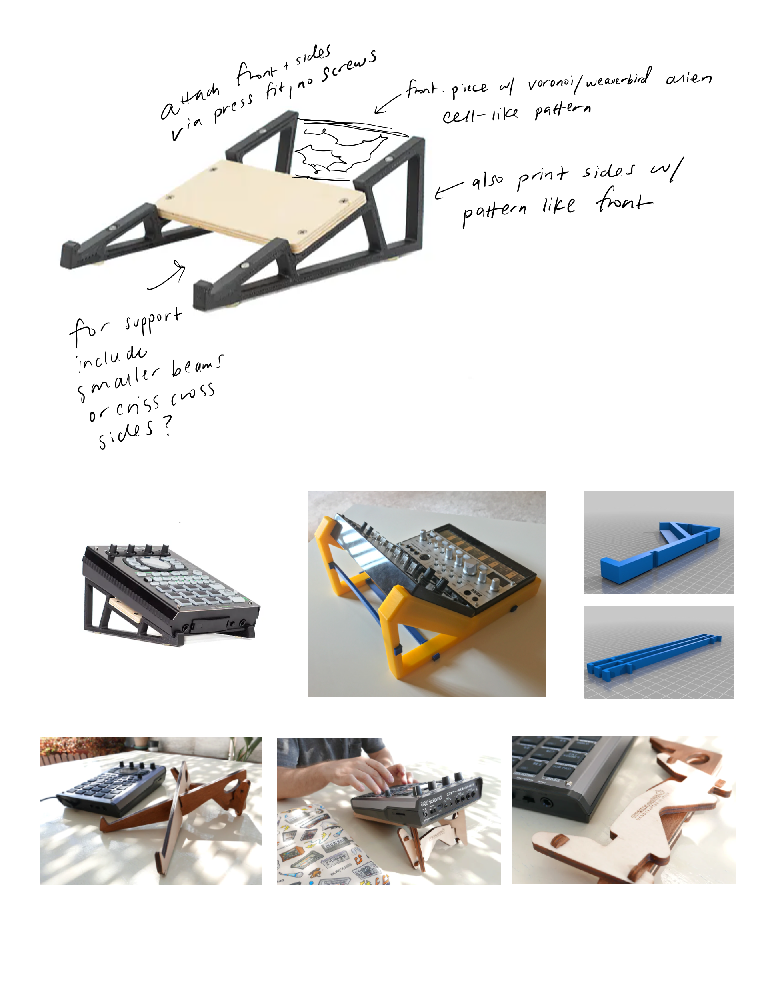
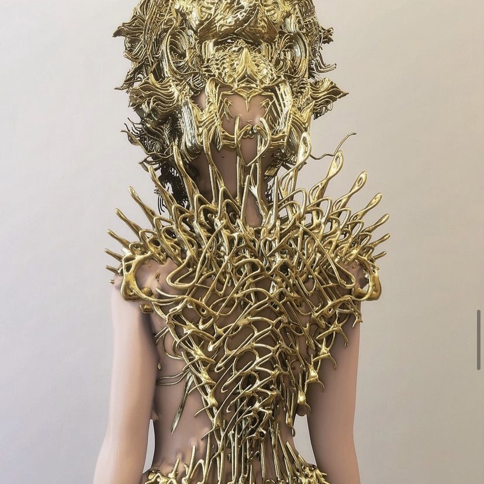
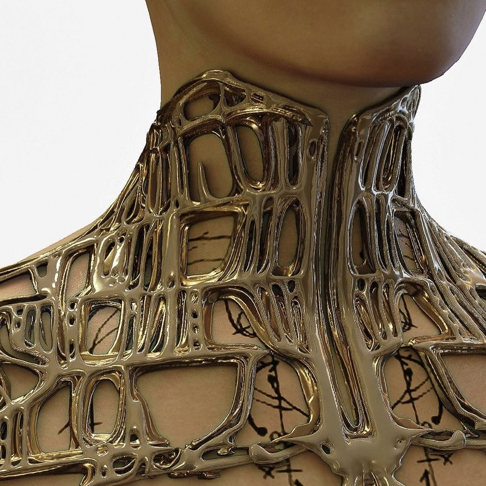
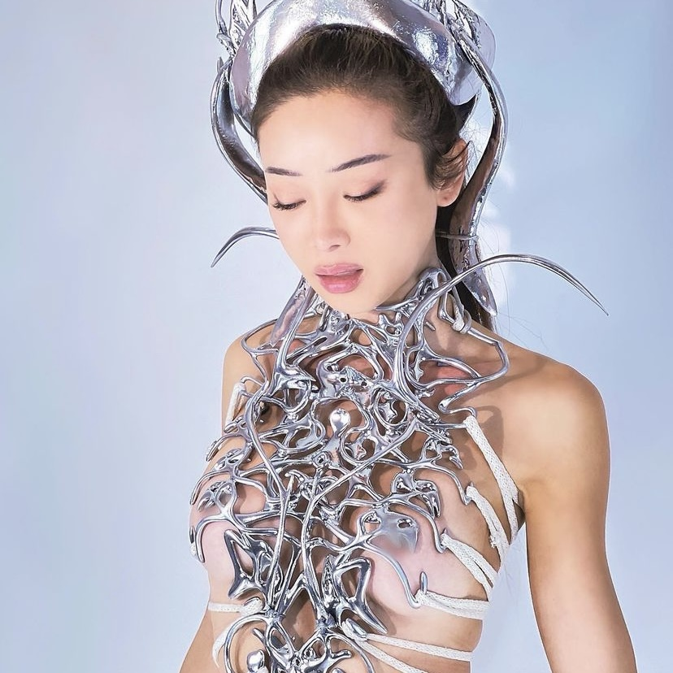
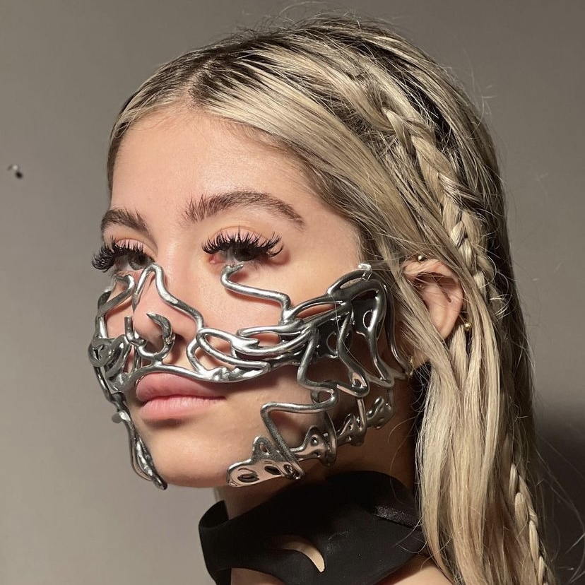
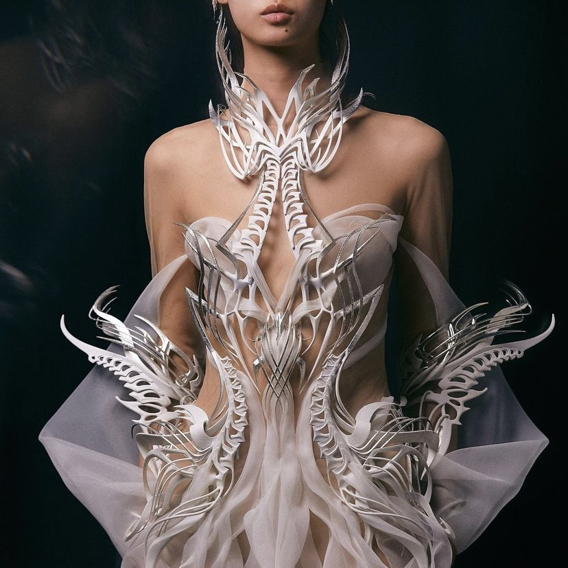
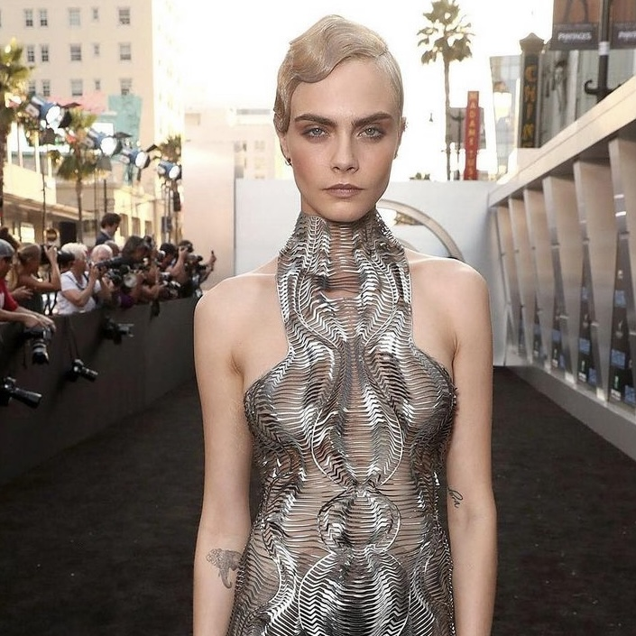
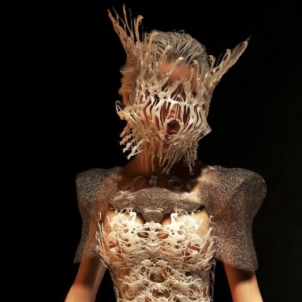
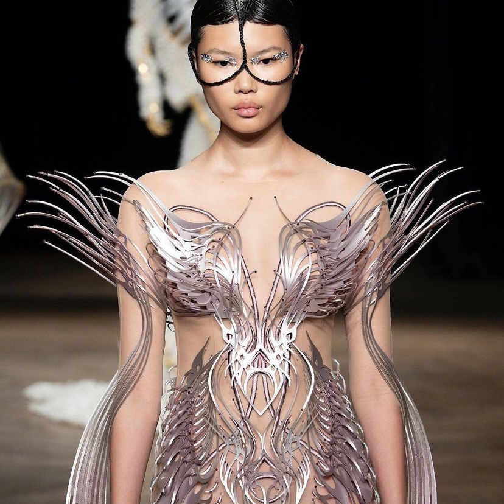
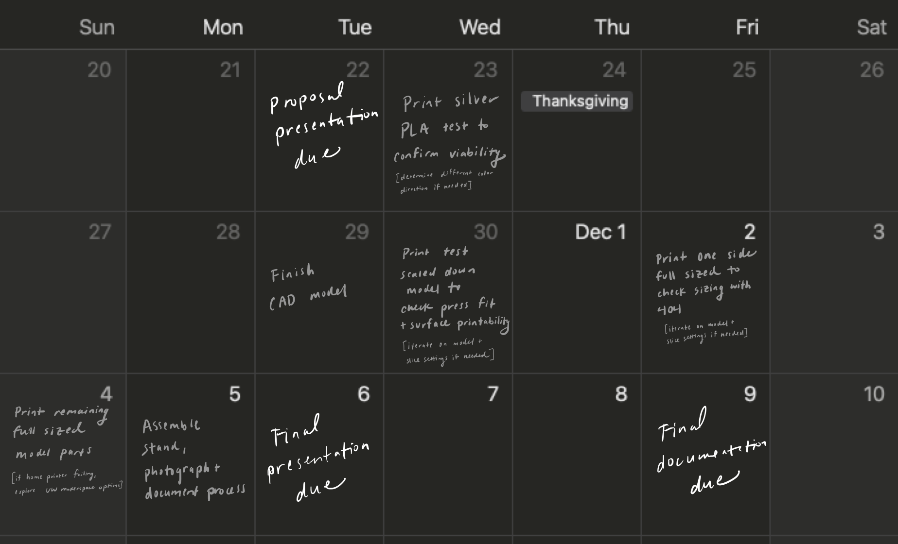

For this assignment, we needed to create a pitch for a final project incorporating at least four techniques learned in class.
Concept
I plan to create a stand for my Roland SP-404SX sampler with an alien cellular chrome look. Right now I have to hunch over to see what I'm doing when I'm using it, so the stand will serve both an ergonomic and aesthetic purpose.
I'll utilize the following techniques from class:
- Rhino (incl modelling, mesh editing)
- Grasshopper (incl parametric design)
- Interference fits (press-fit)
- 3D printing
- If re-route to plan B from contingency section is needed, laser cutting instead
Structure
I've outlined some ideas and other products to reference for structural direction below.

Style
I've also collected a mood board of pieces by Nusi Quero and Iris Van Herpen to reference for style direction. I'd wanted create a jewelry set with an adjacent vibe for the final project, but needed to incorporate an extra technique to fulfill the requirements, so now I'm creating jewelry for my sampler :)
Nusi Quero




Iris Van Herpen




Breakdown of tasks
- Measure Roland SP-404SX dimensions
- Build CAD model with Grasshopper & Rhino
- Slice with Cura
- 3D print
- If re-route to plan B from contingency section is needed, laser cut instead
- Assemble
- Photograph & document process
Timeline with contingency plans

Minor course corrections
- If the voronoi pattern is too complex to model or print, simplify requirements to a stand that fits together & fits the 404 (no alien-esque style needed)
- If the silk silver PLA isn't cooperating with the printer, use another PLA filament
- If the final prints aren't finished by Dec 4 because of home printer issues, explore makerspace printing options
Skrrrt skrt - plan B
- If at any point in the modeling/slicing/printing process it becomes clear that the model is going to be too big/time-consuming/difficult to print on any printer, transition to laser cutting instead - buy wood, adjust press fit tolerances based on width of wood, flatten design, and laser cut at a makerspace
Bill of materials with sourcing schedule
- Ender 3 Pro ✓
- PLA filament: silk silver, glitter red, black, white ✓
- Caliper ✓
- Measuring tape ✓
- Wood (will source if plan B enacted)